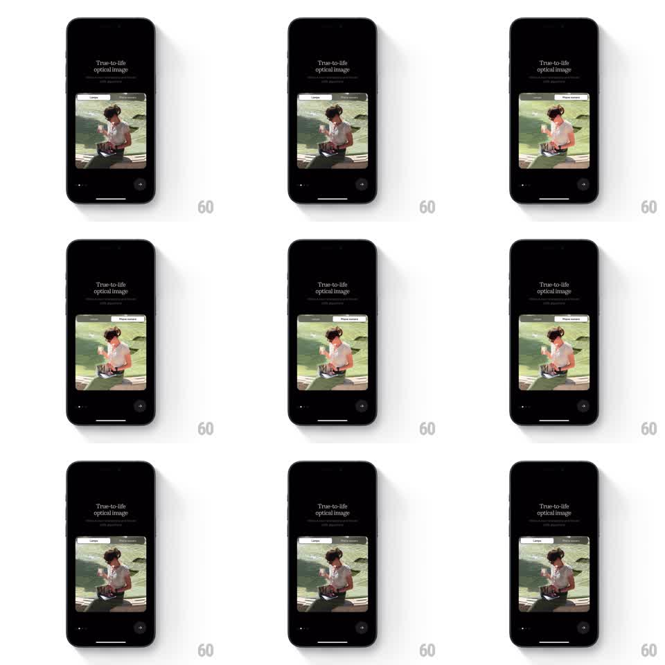

Media
Frame-by-frame

Rebuild this interaction 1:1: Lampa's onboarding comparison - a pill toggle on the photo switches between the Lampa and Phone camera states, sliding the active label across as the image crossfades.

Rebuild this interaction 1:1: Lampa's onboarding comparison - a pill toggle on the photo switches between the Lampa and Phone camera states, sliding the active label across as the image crossfades. ## Integration Integration: stack-agnostic spec - springs given as stiffness/damping, timed motions as duration + curve; map every value to your framework and animation library of choice. ## Scene Black onboarding screen: "True-to-life optical image" headline with subcopy, a large rounded photo card (a person seated on grass), a small pill toggle floating at the card's top edge with "Lampa" and "Phone camera" labels, and a dot pager plus arrow button at the bottom. ## Motion spec Pattern: sliding-pill toggle with image crossfade, ~500ms. - Tap the toggle (or swipe the card): the pill's active backing slides from one label to the other (spring stiffness 340 damping 22), stretching slightly in transit. - Simultaneously the photo crossfades to the other camera's render (350ms) - the Lampa side is graded and rich, the Phone camera side flatter and brighter. - The switch can also be driven by dragging across the photo: the crossfade tracks the drag fraction 1:1 and completes or springs back on release. - The toggle's inactive label sits at 60% opacity; it animates to full as the backing arrives. - The headline and pager never move. ## Calibration - The crossfade is blend-only - no slide or zoom on the photo, which would read as a carousel. - The pill's stretch is subtle (scaleX to 1.15 max) and only while traveling. ## Reduced motion Photo and pill state change with a simple fade. ## Don't miss - The toggle floats on the photo's top edge, half-overlapping it - it belongs to the image, not the page header. - The two photos are the identical composition with different processing - the crossfade must align pixel-perfectly or the subject jumps.